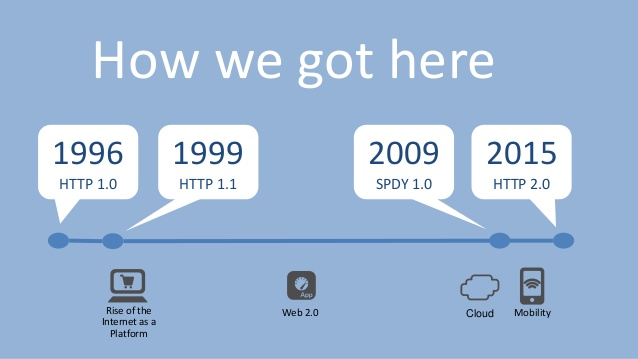
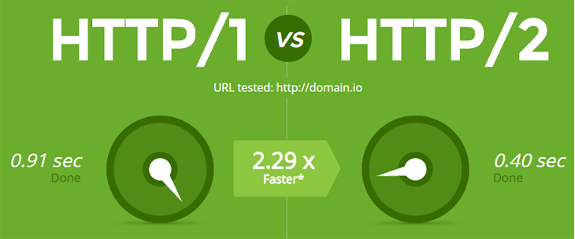

class: center, middle, cajslogo # Central Arkansas JavaScript Online Meeting ## April 16, 2020 ## HTTP2 and SPDY --- # This is our first on-line meeting - Social Distancing, Quarantine, and Isolation - Covering your Face <img src="img/working-from-home-1-head-shot.jpeg" alt="Working from home" width="60%" /> --- class: center, middle, cajslogo # HTTP/2 and SPDY ## Martin Jackson Welcome to the Central Arkansas JavaScript monthly meeting. This is our first time to be online for our meeting. Tonight's topic will be presented by Martin Jackson on HTTP/2 and SPDY. --- class: center, middle   ---  --- ## But can I use HTTP/2 now? ### Browser side [Can I Use "http/2"](https://caniuse.com/#search=http%2F2) ### Server Side [HTTP/2 Wiki](https://en.wikipedia.org/wiki/HTTP/2) - Apache 2.4.12+ - Apache Tomcat 8.5+ - nginx 1.9.5+ - .highlight[Node.js 8.13.0+ (2017+)] - Express.js (in 5.0 alpha -- not out yet) - SPDY (early 2016 Google phased out in favor of new HTTP/2 standard) - .highlight[Koa.js (since 2018)] ### Cloud Side - AWS (since Sept 7, 2016) - Cloudflare, Microsoft Azure, Fastly, StackPath --- # Show Me the Code! --- server.js ```JavaScript const fs = require('fs'); const http2 = require('http2'); const args = require('./args') const genApp = require('./genKoaApp') const h2PushStatic = require('./h2PushStatic') const pushStatic = h2PushStatic(args.home) const app = genApp(args.home); const options = { key: fs.readFileSync(`./ssl/${args.hostname}.key`), cert: fs.readFileSync(`./ssl/${args.hostname}.crt`), allowHTTP1: true }; const server = http2.createSecureServer(options, (req, res) => { const { socket: { alpnProtocol } } = req.httpVersion === "2.0" ? req.stream.session : req; console.log(`http ver: ${req.httpVersion} protocol: ${alpnProtocol} ${req.url}`) let done = false; if (req.httpVersion === "2.0") { done = pushStatic(req, res); } if (!done) app(req, res); }); ``` --- server.js conintued ```JavaScript server.listen(args.port, (err) => { if (err) { console.error(err) return } console.log(`Server listening on ${args.port}`) }) ``` genKoa.js ```JavaScript const fs = require('fs'); const koa = require('koa'); const helmet = require("koa-helmet"); // koa-helmet >=2.x (master branch) supports koa 2.x const serve = require('koa-static'); function genApp(home) { const app = new koa(); app.use(helmet()); app.use(serve(home)); // response app.use(ctx => { ctx.body = 'Hello Koa'; }); return app.callback(); } module.exports = genApp; ``` --- excerpts taken from h2PushStatic.js ```JavaScript let publicFiles; function init(homeDir) { publicFiles = helper.getFiles(homeDir) return onRequest; } ``` ```JavaScript // Request handler function onRequest (req, res) { const reqPath = req.url === '/' ? '/index.html' : req.url const file = publicFiles.get(reqPath) // serverPush with index.html if (reqPath === '/index.html' && res.stream.pushAllowed) { console.log(' push:', keysStr(publicFiles)); for (const f of publicFiles.keys()) { serverPush(res.stream, f) } } // Serve file res.stream.respondWithFD(file.fileDescriptor, file.headers) return true; } ``` --- excerpts taken from h2PushStatic.js ```JavaScript // Server Push one file function serverPush (stream, path) { // console.log('push:', path); const file = publicFiles.get(path) if (!file) { console.log('push file missing:', path); return } stream.pushStream({ [HTTP2_HEADER_PATH]: path }, (err, pushStream, headers) => { if (err) { // throw err; console.log(`error pushing: ${path}, let browser ask for asset later.`); } else { pushStream.respondWithFD(file.fileDescriptor, file.headers) } }) } ``` --- # Example of Single Page App - Built with Webpack (one bundle.js) - Built with Snowpack (each individual file) Time to First Paint - Snowpack home directory 158 mS - Webpack home directory 175 mS run-snow.sh ```bash node server.js --port 8000 --home ~/demos/snow/public ``` run-wpack.sh ```bash node server.js --port 8000 --home ~/demos/wpack/public ``` --- These slides [https://github.com/martinjackson](https://github.com/martinjackson) "cajs-presentation-2020-April" ## Images came from the following articles: ### Everything You Need To Know About HTTP 2.0 [https://www.techgyd.com/everything-need-know-http-2-0/19853/](https://www.techgyd.com/everything-need-know-http-2-0/19853/) ### http/2 [https://www.webfandom.com/introduction-http-2](https://www.webfandom.com/introduction-http-2) ### Getting Ready For HTTP2: A Guide For Web Designers And Developers [https://www.smashingmagazine.com/2016/02/getting-ready-for-http2/](https://www.smashingmagazine.com/2016/02/getting-ready-for-http2/) ### HTTP/2 is here! Goodbye SPDY? Not quite yet, 2015 [https://blog.cloudflare.com/introducing-http2/](https://blog.cloudflare.com/introducing-http2/) ---